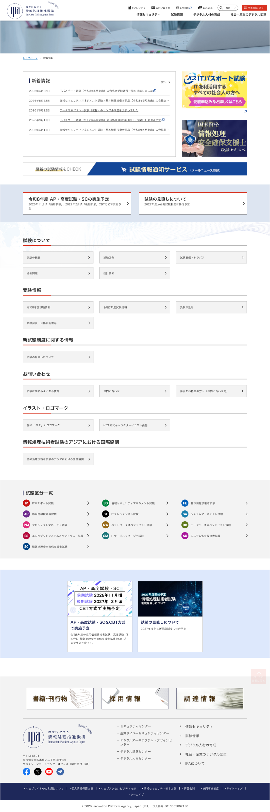
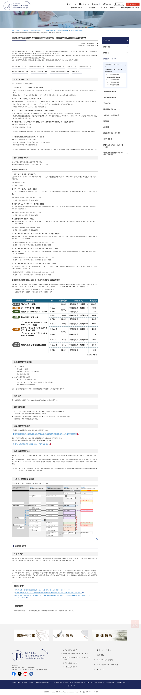
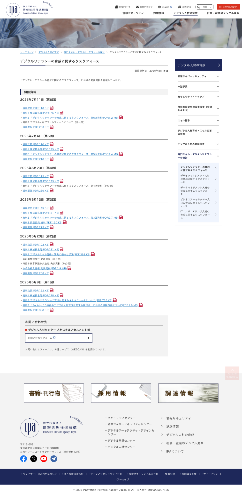
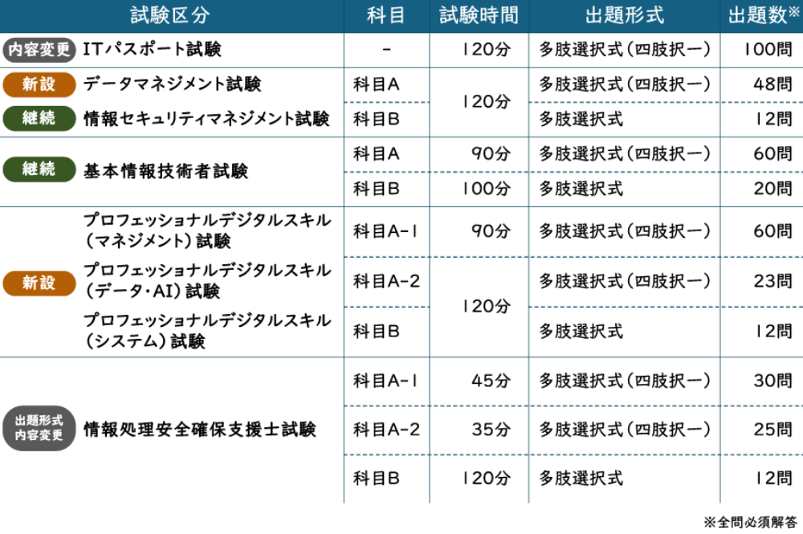
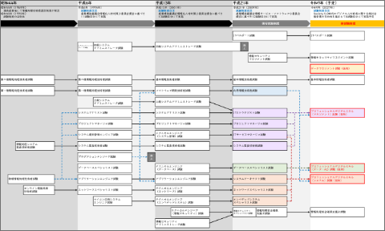
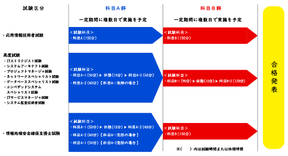

Webサイト運用・更新業務
独立行政法人 情報処理推進機構
Project overview
プロジェクト概要
独立行政法人 情報処理推進機構が運営する公式Webサイトの「試験情報」領域を担当。
ITパスポート試験、基本情報技術者試験、情報セキュリティマネジメント試験等の国家試験に関するコンテンツページの運用・公開管理業務に従事した。

試験情報 トップページ（スクロールできます）
Feature
サイトの特徴
- ・国家試験に関する情報を掲載する公共性の高いWebサイト。
- ・受験者、企業、教育機関など幅広い利用者が閲覧する。
- ・掲載内容や公開タイミングにおいて、高い正確性が求められる運用環境。
Key Responsibilities
主な担当業務
- ・CMSを用いたコンテンツ更新、修正
- ・業務マニュアル作成
- ・PDF資料のセキュリティ設定および掲載
- ・更新スケジュール管理
- ・関係部署との調整
- ・アクセシビリティを考慮したコンテンツ更新
- ・バナー制作

※ 新規コンテンツとして制作・公開したページの一例
◾️担当業務
掲載用画像の制作、PDF資料の掲載、CMSを用いたページの新規作成・更新作業、公開前確認および公開管理
◾️工夫したポイント
後任担当者へのレクチャーや確認作業を並行して実施し、円滑な公開準備・引継ぎを進めた。

※ PDF資料のセキュリティ設定・掲載業務を担当したページの一例
◾️担当業務
PDFセキュリティ設定、PDF資料の掲載、CMSを用いたページの更新、公開前確認および公開管理
◾️工夫したポイント
短期間での公開が求められる複数ページを並行して担当し、優先順位を整理しながら計画的に進行した。また、公開前にはPDFファイル名やタイトル、セキュリティ設定など細部まで確認し、正確な情報公開を徹底した。作業手順書や運用ルールを随時見直し、業務品質の維持・向上に取り組んだ。
Achievements
工夫した点・成果
・公開前チェック
→公開前に、掲載内容やリンク先・PDFのセキュリティ設定など、複数項目をチェックリストに沿って確認し、公共性の高いWebサイトにおける正確な情報公開に努めた。
・業務マニュアル整備
→前任者から口頭中心で引き継がれていた業務について、作業手順や確認ポイントを整理してマニュアルを新たに作成した。担当者が変わっても、同じ品質で作業を進められる運用体制を整備し、後任者へのスムーズな引き継ぎと業務の標準化に貢献した。
・関係部署との調整
→更新スケジュールが短い案件では、関係部署との認識合わせや公開日の調整を主体的に担当。担当メンバーの調整業務も巻き取り、更新作業が円滑に進むよう貢献した。
Deliverables
制作物
◾️Webサイト全体 トップページ掲載用バナー
⚫︎担当業務
掲載画像のイメージすり合わせ、文字組み・レイアウト調整、配色調整、公開用画像の書き出しなど
⚫︎工夫したポイント
まずはデザインのイメージすり合わせ後、ラフを作成し、関係者と方向性を確認した上でその後の制作を進めました。修正の段階では、文字の装飾やレイアウト、配色など異なる複数の案を作成し、比較しながら確認できるように工夫することで、レビューの負担軽減と認識齟齬の防止を意識した。
◾️「試験の見直しの検討状況について」ページ 掲載用画像

⚫︎担当業務
Excel資料をもとにWeb掲載用に再構成、Illustratorにて画像を制作 、掲載用画像を書き出しなど
⚫︎工夫したポイント
情報量が多い表のため、視認性を損なわないよう配色やレイアウトを調整した。同時期に複数ページを公開するスケジュールであったため、優先順位を整理しながら制作を進めた。
◾️その他 サイト掲載用画像


Tool
使用ツール
WebRelease2（CMS）／Photoshop／Illustrator／Adobe Acrobat Pro／Excel／Teams／Outlook